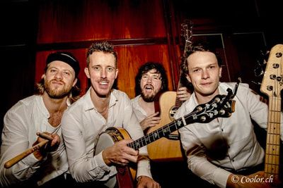
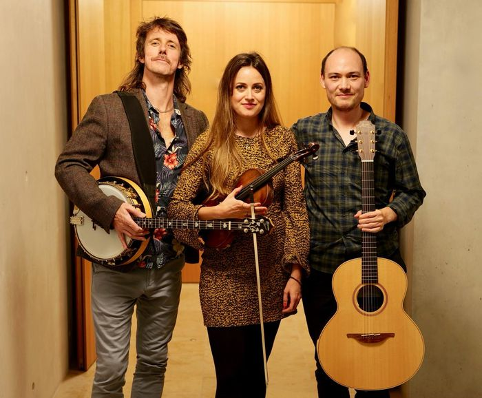
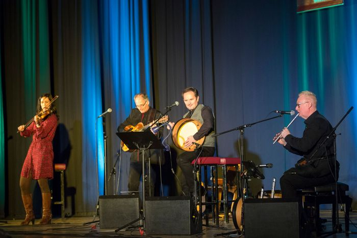
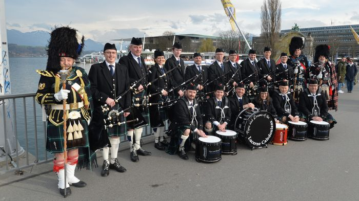
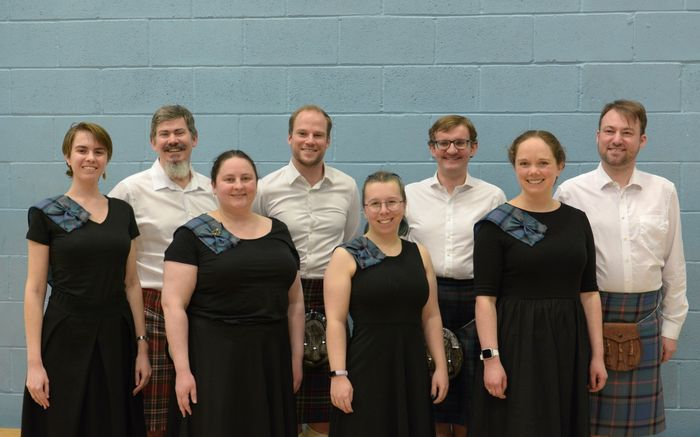
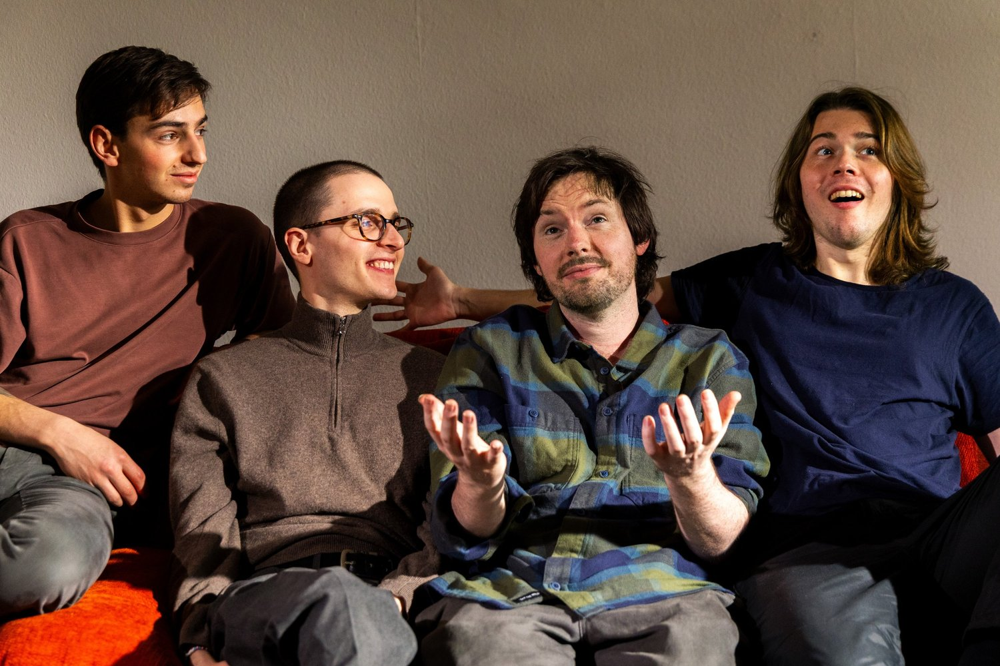

Sechs Acts, ein gemeinsamer Nenner: Celtic Folk mit Charakter.

The Led Farmers
Indie Irish Folk Rock Band aus Irland. Die meisten Bandmitglieder haben einen universitären Musikabschluss — ein Mitglied wurde sogar zweimaliger „All Ireland Music Champion". Auf Tourneen durch die USA und Europa gefeiert als einer der besten irischen Live-Acts, mit besonders viel Anklang für die eigenen Kompositionen und neu arrangierte irische Folk-Klassiker.
Besetzung: Brendan Walsh (Banjo, Vocals) · Ross O'Farrell (Bass, Vocals) · Eoghan de Hoog (Guitar, Vocals) · Glenn Malone (Drums, Vocals)
theledfarmers.com

Celtic Trad Music — Helen Meier, Raoul Morat & Brendan Walsh
Drei der aktivsten Celtic/Folk-Musiker der Schweiz. Brendan Walsh, zweifacher All-Ireland-Champion aus der Grafschaft Clare, ist für sein virtuoses Banjospiel bekannt. Helen Meier gilt als eine der beliebtesten Fiddlerinnen der Schweiz, mit TV-Auftritten und einer Mitarbeit am Album von Rapper Bligg. Raoul Morat erhielt für sein Gitarrenkonzert die Höchstnote 6.0 im Master-Studium und spielt auch in der Folkband „Áed".

Andreas Winkler Band
Andreas Winkler entführt mit wundervollen Balladen und samtweicher Stimme in die romantisch-melancholische Klangwelt Schottlands — dazu temperamentvolle Songs, wie man sie aus den Pubs von Edinburgh oder Inverness kennt. Winkler war 15 Jahre Solist am Opernhaus Zürich. Als Gast-Star: Sven Angelo Mindeci am Akkordeon, mit Duetten, die für Gänsehautmomente sorgen.

The Pipes & Drums of the Lucerne Caledonians
Gegründet 1981 aus einer kleinen Gruppe Dudelsack-Enthusiasten um Julius Wili — heute eine der traditionsreichsten Scottish Pipe Bands der Schweiz. In den Tartans des Clan Lamont aufgetreten u.a. mit der Rockband Gotthard, am Luzerner Fest und auf dem Whisky-Schiff Luzern. Probt wöchentlich im Luzerner Wartegg-Schulhaus und bildet neue Musiker:innen im Dudelsack- und Trommelspiel aus.

Zurich Scottish Country Dancing Club
Der ZSCDC gehört der Royal Scottish Country Dance Society an und wurde 1963 gegründet. Man trifft sich jeden Dienstagabend zum Tanzen im St Andrew's Church Community Centre. Das Demonstrationsteam nimmt an internationalen Wettbewerben teil und bringt die Liebe zum schottischen Volkstanz mit auf die Bühne in Zürich.

Jack's Kettle — Irish Tradition trifft Rock & Jazz
Jack's Kettle verbindet die mitreissenden Melodien traditioneller irischer Musik mit Rock und einem Hauch Jazz zu einem ganz eigenen, energiegeladenen Sound. Conor Buckley (Gitarre), Lennart Schandl (Bass), Robin Rindlisbacher (Keys) und Joshua Leblanc-Demers (Drums) lassen Irish Folk in überraschenden Arrangements und eigenen Kompositionen neu aufleben – mal sanft und poetisch, mal wild und kraftvoll. Vertraut und doch überraschend: Irish Fusion voller Spielfreude und Energie.
Besetzung: Conor Buckley (Gitarre) · Lennart Schandl (Bass) · Robin Rindlisbacher (Keys) · Joshua Leblanc-Demers (Drums)
jackskettle.com